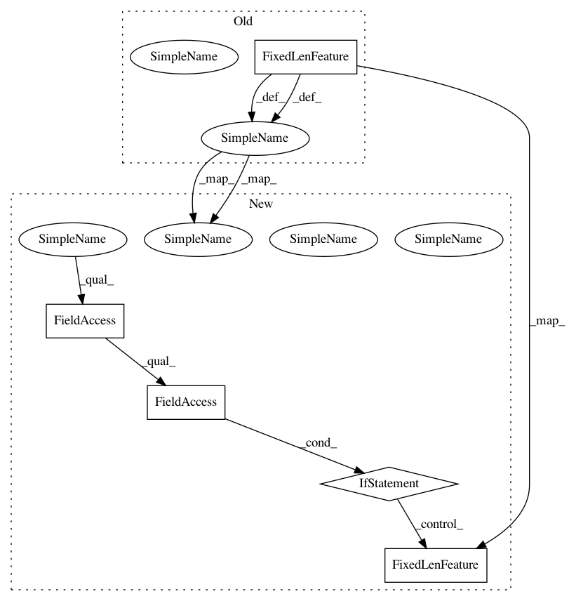

e10b29f4ba212cb7e1c25a57c7e8b3a465631ccf,official/nlp/data/pretrain_dataloader.py,BertPretrainDataLoader,_decode,#BertPretrainDataLoader#,56
Before Change
def _decode(self, record: tf.Tensor):
Decodes a serialized tf.Example.
name_to_features = {
"input_ids":
tf.io.FixedLenFeature([self._seq_length], tf.int64),
"input_mask":
tf.io.FixedLenFeature([self._seq_length], tf.int64),
"segment_ids":
tf.io.FixedLenFeature([self._seq_length], tf.int64),
"masked_lm_positions":
tf.io.FixedLenFeature([self._max_predictions_per_seq], tf.int64),
"masked_lm_ids":
After Change
def _decode(self, record: tf.Tensor):
Decodes a serialized tf.Example.
name_to_features = {
"input_mask":
tf.io.FixedLenFeature([self._seq_length], tf.int64),
"masked_lm_positions":
tf.io.FixedLenFeature([self._max_predictions_per_seq], tf.int64),
"masked_lm_ids":
tf.io.FixedLenFeature([self._max_predictions_per_seq], tf.int64),
"masked_lm_weights":
tf.io.FixedLenFeature([self._max_predictions_per_seq], tf.float32),
}
if self._params.use_v2_feature_names:
name_to_features.update({
"input_word_ids": tf.io.FixedLenFeature([self._seq_length], tf.int64),
"input_type_ids": tf.io.FixedLenFeature([self._seq_length], tf.int64),
})
else:
name_to_features.update({
"input_ids": tf.io.FixedLenFeature([self._seq_length], tf.int64),
"segment_ids": tf.io.FixedLenFeature([self._seq_length], tf.int64),
})
if self._use_next_sentence_label:
name_to_features["next_sentence_labels"] = tf.io.FixedLenFeature([1],
tf.int64)
if self._use_position_id:
In pattern: SUPERPATTERN
Frequency: 3
Non-data size: 5
Instances
Project Name: tensorflow/models
Commit Name: e10b29f4ba212cb7e1c25a57c7e8b3a465631ccf
Time: 2020-09-08
Author: hongkuny@google.com
File Name: official/nlp/data/pretrain_dataloader.py
Class Name: BertPretrainDataLoader
Method Name: _decode
Project Name: tensorflow/models
Commit Name: 3c61d59128c88f7e155a84296e1b9c1d0fa56170
Time: 2020-12-03
Author: gardener@tensorflow.org
File Name: official/nlp/data/wmt_dataloader.py
Class Name: WMTDataLoader
Method Name: _decode